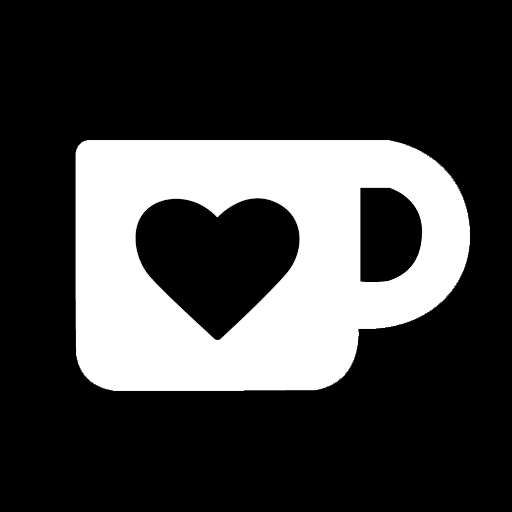

I've always been heavily interested in music, and I began learning how to produce music in 2015; composing and releasing my first original song (Fight or Flight) on July 4th, 2016. Since then I've been steadily improving, and as of 2019 I've been releasing one song every month.
Currently, I make all of my music digitally in FL Studio 20 with various VSTs/plugins (some of which are listed below).
I most commonly produce rock and electronic music, and I aim to expand my skills with other genres.
If you'd like to tell/ask me anything, you can email me at seth@sethgibbs.xyz or contact me on any of the social platforms above. I'll get back to you as soon as I can!